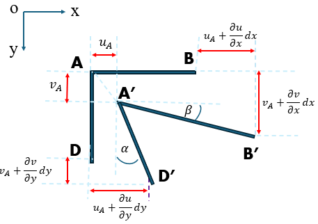

Stress and Stress Equations of Motion 1.1. Stress Components, Notation, and Sign Convention 1.2. Stress Relations at a Point 1.3. Principal Stresses 1.4. Stress Equations of Motion
Strain and Geometric Equations 2.1. Normal Strain 2.2. Shear Strain 2.3. Geometric Equations
Interested in deformation, stress, and possible failure
What is a Continuum?
A continuum is an idealisation in which
mass is continuously distributed throughout a body,
material properties vary continuously,
deformation occurs under applied forces.
The continuum assumption lets us describe materials using fields (e.g. displacement, stress, density) instead of tracking individual particles.
What is Continuum Mechanics?
Continuum mechanics studies the behaviour of materials in space and time. This includes motion, deformation, stress, and failure, together with the effects of external forces and body forces.
Branches
Solid Mechanics
Fluid Mechanics
Physical quantities include velocity, strain, stress, temperature, and density.
Four Fundamental Ingredients
Stress
equations of motion
Strain
geometric relations
Continuity equation
conservation of mass
Constitutive equations
material behaviour
1. Stress and Stress Equations of Motion
Figure 1: Internal force \(\Delta\mathbf{F}\) acting on a surface element \(\Delta A\) at point \(P.\)
Consider a body \(\Omega\) that is subjected to external loading.
Imagine an internal surface\(S\) passing through a point \(P\)
Cutting along \(S\) separates the body into two parts.
One part exerts an internal force\(\Delta\mathbf{F}\) on the other.
For a small surface element \(\Delta A\), the force per unit area is called the traction (stress) vector: \[
\mathbf{t}(\hat{\textbf n}) = \lim_{\Delta A \to 0} \frac{\Delta \mathbf{F}}{\Delta A}.
\]
Stress measures force intensity rather than total force.
The stress vector is generally not\(\perp\) to the surface, and can be resolved into
Figure 2: Normal and shear components of the stress vector.
one normal component associated with tension or compression
two shear components associated with change of shape
with respect to the orthonormal basis \((\hat{\mathbf n},\mathbf s_1,\mathbf s_2),\)
\(\hat{\mathbf n}\) is the unit normal to the surface,
\(\mathbf s_1\), \(\mathbf s_2\) are mutually orthogonal tangent vectors.
The traction vector \(\mathbf{t}(\hat{\mathbf n})\) depends on the orientation of the surface through the unit normal \(\hat{\mathbf n}\).
1.1. Stress Notation
Consider a cube of material with sides parallel to the coordinate planes. The stress components are denoted by \(\sigma_{ij}\), where \(i\) indicates the normal direction of the plane, and the \(j\) indicates the direction of the stress component.
if a stress component \(\sigma_{ij}\) has a positive value, then \(\sigma_{ij}\) is acting in the direction as shown in the figure; or otherwise in the opposite direction.
Example: Sign Convention for Stress Components
Consider a small cubic element subjected to the following stress components:
For the 2-D case, the stress tensor can be expressed as \(\begin{pmatrix} \sigma_{11} & \sigma_{12} \\ \sigma_{21} & \sigma_{22} \end{pmatrix}.\)
For the 3-D case, the stress tensor can be expressed as \(\begin{pmatrix} \sigma_{11} & \sigma_{12} & \sigma_{13} \\ \sigma_{21} & \sigma_{22} & \sigma_{23} \\ \sigma_{31} & \sigma_{32} & \sigma_{33} \end{pmatrix}.\)
The stress components are not all independent. In the absence of couple stresses, the stress tensor is symmetric, \[
\sigma_{ij}=\sigma_{ji}, \qquad i,j=1,2,3.
\]
For the 2-D case, if symmetry is imposed, then only three independent components remain: \(\begin{pmatrix} \sigma_{11} & {\color{red}\sigma_{12}} \\ {\color{red}\sigma_{12}} & \sigma_{22} \end{pmatrix}\).
1.4. Principal Stresses
The normal stress \(\sigma_{nn}\) on the \(n\)-plane depends on the angle \(\theta\).
Question: Which plane carries the maximum normal stress? Which plane carries the minimum normal stress?
Figure 5: Principal plane orientations: (left) the angles \(\theta_1\) and \(\theta_2\) defining the two mutually perpendicular principal planes; (right) the periodic nature of \(\tan 2\theta\) from which \(\theta_2=\theta_1+\pi/2\) is obtained.
The orientations of these planes are called the principal planes.
The corresponding normal stresses are called the principal stresses.
Further, moment balance gives \(\quad\sum M_o = 0.\)
Therefore, in the absence of couple stresses, the shear stresses on mutually perpendicular planes are equal:
\[
\sigma_{xy}=\sigma_{yx},
\]
which indicates that the stress tensor is a second-order symmetric tensor.
2. Strain and Geometric Equations
When external forces act on a body, material points are displaced and the body may change both size and shape. These effects are measured by the strain components.

Figure 7: The derivation of strain-displacement relations.
Consider a 2-D displacement field
\[
u = u(x,y,t),
\]
\[
v = v(x,y,t),
\]
where \(u\) and \(v\) are the displacements in the \(x\)- and \(y\)-directions, respectively.
From Figure 7, \(AB\) and \(AD\) deform into \(A'B'\) and \(A'D'\).
Then, the displacements of point \(A\) are \(u_A\) and \(v_A\).
Then, from the continuum assumption, the displacement of point \(B\) is
strain components are determined from the displacement field by the geometric equations.
3. The Continuity Equation
The continuity equation expresses conservation of mass. Since mass can neither be created nor destroyed, the density and velocity fields in a continuum satisfy
Figure 8: A fixed control volume \(\Omega\) with closed boundary surface \(S\) and outward unit normal \(\mathbf{n}\). If the fluid velocity is \(\mathbf{v}\), then the outward normal component is \(v_n = \mathbf{v}\cdot\mathbf{n}.\)
Let \(dS\) be a differential surface element (on \(S\)) with area \(dS\), and
\(dl\) be a differential length in \(\mathbf n\) direction (the distance the fluid moves in unit time),
\[
dl=\mathbf{v} \cdot\mathbf{n} = v_n
\]
The volume of the fluid flowing out of \(\Omega\) is
\[
dV = v_n \, dS
\]
i.e., the volume of the cylinder with cross-section area \(dS\) and length \(dl=v_n\).
The mass flow rate out through a differential surface element \(dS\) is
and since \(\Omega\) is arbitrary, the differential form follows: \(\dfrac{\partial \rho}{\partial t} + \operatorname{div}(\rho \mathbf{v}) = 0.\)
For an incompressible material, \(\partial \rho / \partial t = 0\), continuity eq reduces to \(v_{i,i} = 0.\)
4. Constitutive Equations
The equations developed so far describe
conservation of momentum,
geometry (strain–displacement),
conservation of mass.
However, they do not describe how a material responds to deformation.
A constitutive equation relates stress to the material response:
\[
\sigma_{ij}
=
f_{ij}
(\text{history of deformation},
\text{history of temperature}).
\]
Note. Different materials require different constitutive laws.
Two important idealised models are
Newtonian fluid
Hookean elastic solid.
4.1. Newtonian Fluid
A Newtonian fluid is a fluid whose viscous stress is linearly proportional to the rate of deformation. Equivalently, its viscosity remains constant and is independent of the rate of deformation (or shear rate).
For an isotropic Newtonian fluid, the constitutive equation is
Newtonian fluids: Water, air, and most common gases.
Non-Newtonian fluids: Ketchup, toothpaste, paint, and blood.
A non-Newtonian fluid requires a more complex constitutive model, as its viscosity changes depending on the force or pressure applied.
4.2. Hookean Elastic Solid
A material for which the stress is linearly proportional to the strain. The material returns to its original shape after the load is removed, provided the deformation remains within the elastic limit.
The general linear constitutive equation is
\[
\sigma_{ij}
=
C_{ijkl}\varepsilon_{kl},
\]
where \(C_{ijkl}\) is the fourth-order elastic stiffness tensor that characterises the material.
For an isotropic elastic solid, Hooke’s law reduces to
and similarly for the remaining stress components.
Examples
Hookean solids: Steel, aluminum, and most metals under small deformations.
Non-Hookean solids: Rubber, polymers, and biological tissues.
A non-Hookean solid requires a more complex constitutive model because its stress–strain relationship may be nonlinear, time-dependent (viscoelastic), or both.